멘토링
멘토링멘티 이용 가이드
현직 선배 멘토에게 1:1로 묻고, 나의 진로를 설계하세요.
재학생을 위한 가입부터 질문·강의·알림까지 안내서
차례
- 1. 한눈에 보기
- 2. 회원가입
- 3. 로그인
- 4. 멘토 찾기
- 5. 질문하기 (1:1 톡방)
- 6. 강의 수강하기
- 7. 마이페이지 — 알림 켜기 · 앱으로 설치 · 만족도 조사
- 8. PIN 바꾸기 · 문제 알리기
- 9. 자주 묻는 질문
이 서비스는호서대학교 취업팀이 운영하는 멘토링 서비스입니다. 단과대학별로 배치된 현직 멘토(기업에서 일하는 선배)에게 진로·취업·직무에 관해 1:1로 질문하고 답을 받을 수 있습니다. 비용은 없습니다.
1. 한눈에 보기
- 회원가입: 소속(내 단과대학 → 학과), 이름, 숫자 6자리 PIN을 정합니다. 이메일·학번은 받지 않습니다.
- 로그인: 소속 + 이름 + PIN으로 로그인합니다. 같은 기기에서는 로그인이 유지됩니다.
- 멘토 찾기: 단과대학 구역, 직무 분야, 검색어로 멘토를 찾습니다.
- 질문하기: 멘토 상세에서 1:1 질문하기 → 그 멘토와의 톡방에서 질문합니다.
- 답변 받기: 멘토가 답하면 톡방에 나타나고, 알림을 켜 두면 휴대폰·PC로 알려 줍니다.
- 강의 수강: 멘토가 연 강의에 수강 신청하면 영상·자료·실시간 수업을 볼 수 있습니다.
- 학기가 끝나면: 질문한 멘토에 대한 짧은 만족도 조사에 응답합니다.
로그인하지 않아도 볼 수 있는 것
메인, 서비스 소개, 이용 안내, 단과대학 구역, 멘토 카드, 강의 목록은 누구나 봅니다. 이때 멘토 이름은 가운데 글자가 O로 가려져 보입니다(예: 홍O동). 멘토 상세·질문·수강 신청은 로그인한 뒤에 할 수 있고, 누르면 로그인 화면으로 안내합니다.
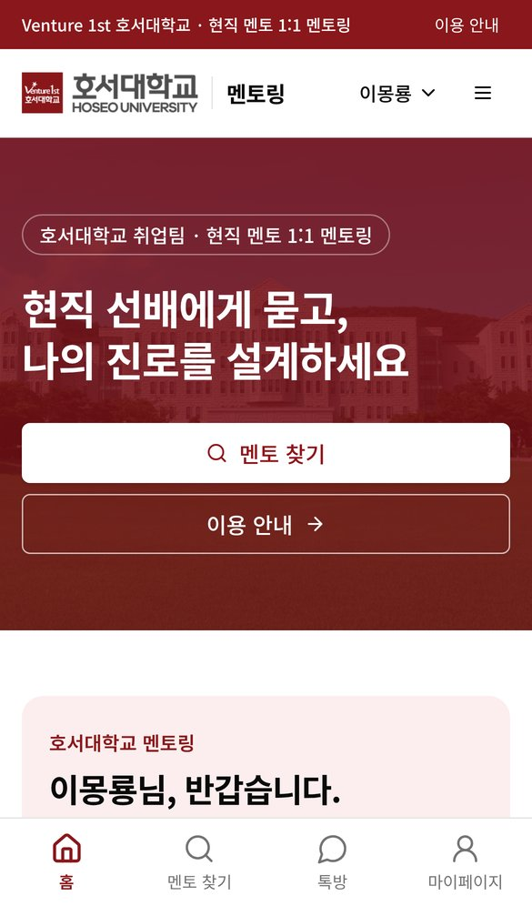
휴대폰 · 메인
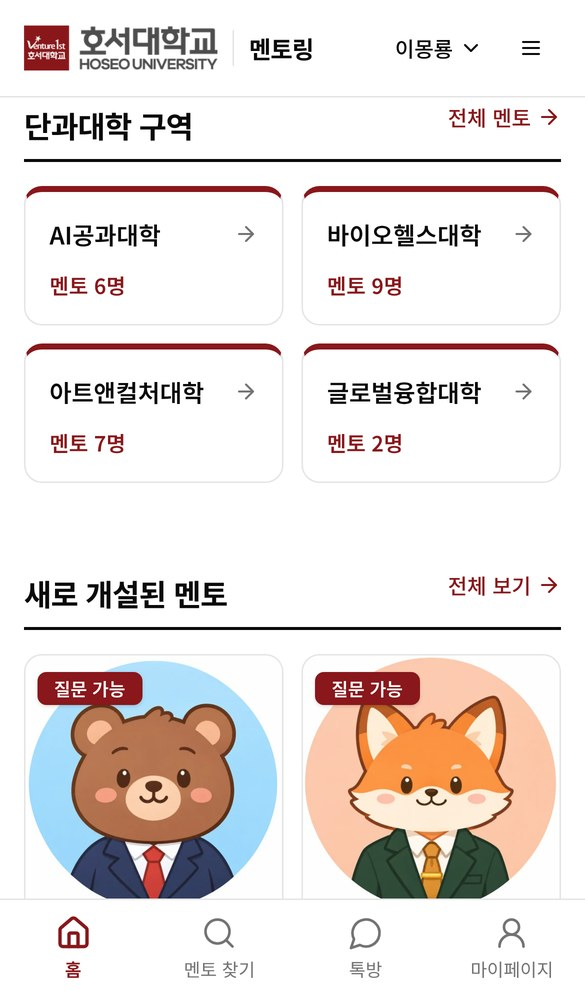
단과대학 구역 · 새로 개설된 멘토
휴대폰에서는 화면 아래에 홈 · 멘토 찾기 · 톡방 · 마이페이지 메뉴가 늘 보입니다. PC에서는 위쪽 메뉴를 씁니다.
2. 회원가입
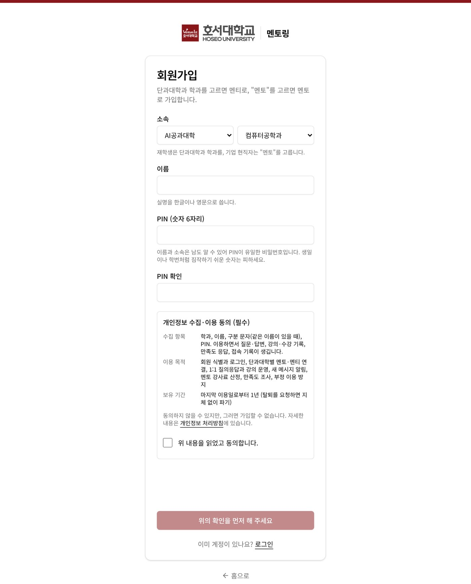
회원가입 화면
- 오른쪽 위 회원가입(휴대폰은 ☰ 메뉴)을 누릅니다.
- 소속 첫 칸에서 내 단과대학을 고르면 둘째 칸이 나옵니다. 둘째 칸에서 내 학과를 고릅니다. (자유전공학부 등은 "교양대학"에 있습니다. "멘토"는 기업 현직자용입니다.)
- 이름에 실명을 한글이나 영문으로 씁니다.
- PIN 숫자 6자리를 정하고 한 번 더 넣습니다.
- 개인정보 수집·이용 동의를 읽고 체크합니다.
- 아래 자동 입력 방지 칸이 "성공"이 되면 가입 버튼을 누릅니다.
PIN은 비밀번호입니다소속과 이름은 다른 사람도 알 수 있어서 PIN이 유일한 비밀번호입니다. 생일·학번 뒷자리·111111처럼 짐작하기 쉬운 숫자는 피하세요.
"같은 이름이 있습니다"가 나오면같은 학과에 같은 이름이 있으면 이름 뒤에 붙일 구분 문자(영문·숫자 1~3자, 예: A)를 정하라고 안내합니다. 이후 로그인할 때도 홍길동A처럼 붙여 씁니다.
3. 로그인
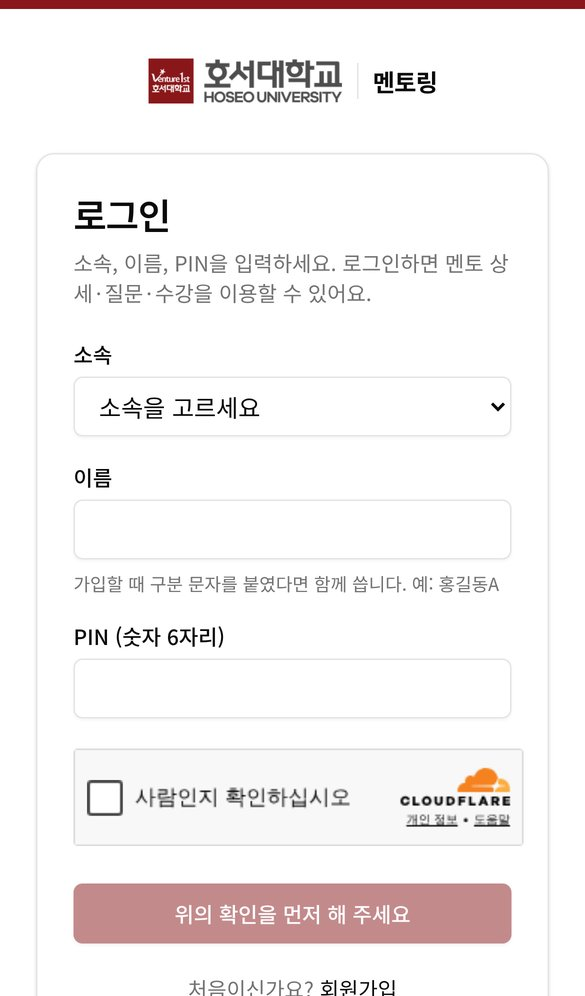
휴대폰 · 로그인
- 오른쪽 위 로그인을 누릅니다.
- 소속(단과대학 → 내 학과), 이름(구분 문자가 있으면 함께), PIN을 넣습니다.
- 자동 입력 방지 칸이 "성공"이 된 뒤 로그인합니다.
로그인 유지같은 휴대폰·PC에서는 로그인이 계속 유지됩니다. 도서관 PC처럼 여러 사람이 쓰는 기기에서는 다 쓴 뒤 오른쪽 위 내 이름 → 로그아웃을 누르세요.
PIN을 잊었으면이메일이 없어서 스스로 찾을 수 없습니다. 관리자(취업팀)에게 연락하면 임시 PIN을 알려 줍니다. 임시 PIN으로 로그인하면 새 PIN을 정하는 화면이 먼저 나옵니다.
4. 멘토 찾기
- 위쪽 멘토 찾기 메뉴 또는 단과대학 메뉴에서 구역을 고릅니다.
- 모든 구역 / 모든 직무 분야를 골라 좁히고, 검색칸에 이름·기업·멘토링 분야를 넣어 찾을 수 있습니다.
- 카드의 질문 가능 표시는 지금 질문을 받는 멘토라는 뜻입니다.
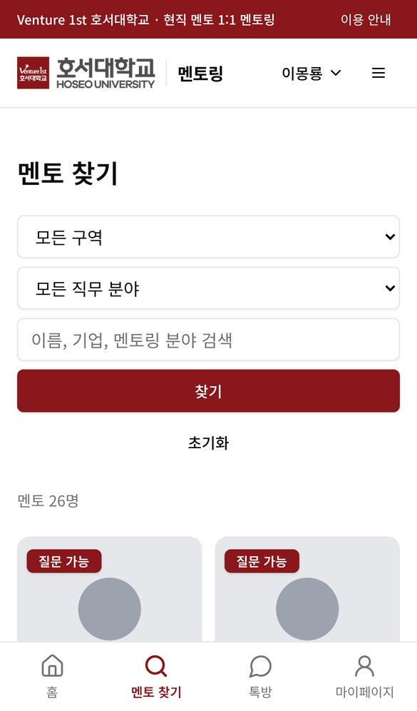
멘토 찾기
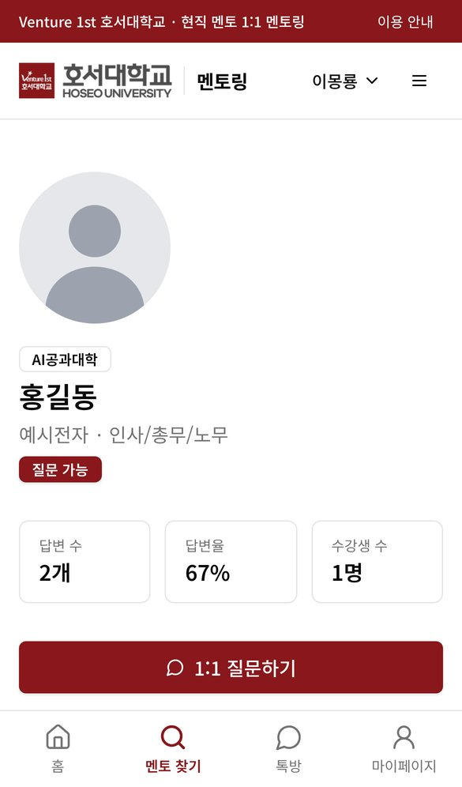
멘토 상세
예시 멘토 외 실제 멘토의 이름·기업은 가렸습니다.
멘토 카드를 누르면 멘토 상세가 열립니다. 대표 멘토링 분야, 소개, 주요 경력, 등록한 강의와 함께 답변 수·답변율·수강생 수를 볼 수 있습니다.
5. 질문하기 (1:1 톡방)
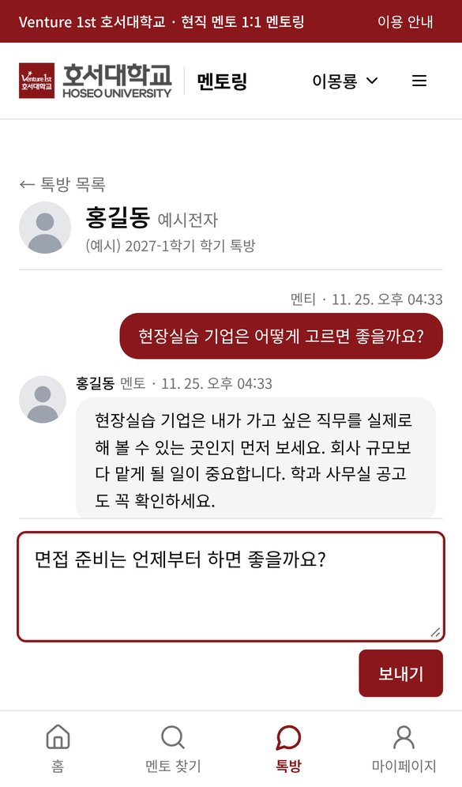
톡방에서 질문·답변
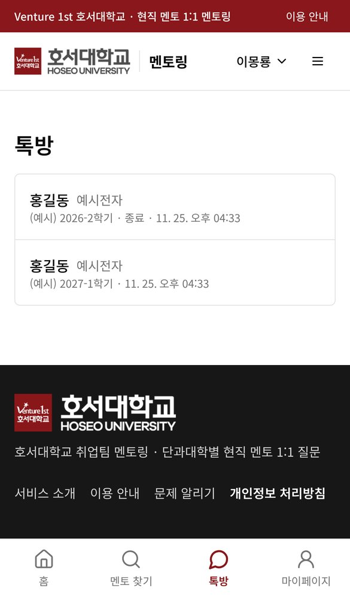
톡방 목록
- 멘토 상세에서 1:1 질문하기를 누르면 그 멘토와의 톡방이 열립니다.
- 아래 칸에 질문을 쓰고 보내기.
- 멘토가 답하면 톡방에 나타납니다. 지난 대화는 톡방 메뉴에서 다시 봅니다. 안 읽은 답변은 숫자로 표시됩니다.
좋은 질문을 쓰는 법
| 이렇게 쓰면 좋아요 | 이런 질문은 답하기 어려워요 |
|---|
| "전자공학과 3학년입니다. 반도체 공정 엔지니어를 준비하는데, 4학년 때 들으면 좋은 과목을 추천해 주세요." | "취업 어떻게 해요?" |
| 내 학년·전공·관심 직무 → 궁금한 점 하나 → 지금까지 해 본 것 순서로 짧게 | 개인 연락처, 회사 내부 정보, 추천서 요청 |
알아 두세요
- 멘토 답변은 공백을 뺀 50자 이상이어서 짧은 한 줄 답은 오지 않습니다. 멘토도 일을 하며 답하므로 답이 오기까지 며칠 걸릴 수 있습니다.
- 톡방은 학기마다 새로 열립니다. 학기가 끝나면 지난 톡방은 읽을 수만 있고 새 메시지는 쓸 수 없습니다.
- "지금은 질문을 받는 학기가 아닙니다"가 나오면 학기 사이 기간입니다. 새 학기가 시작되면 다시 질문할 수 있습니다.
- 대화 내용은 운영(강사료 산정·부적절한 글 관리)을 위해 관리자가 볼 수 있습니다. 서로 예의를 지켜 주세요.
6. 강의 수강하기
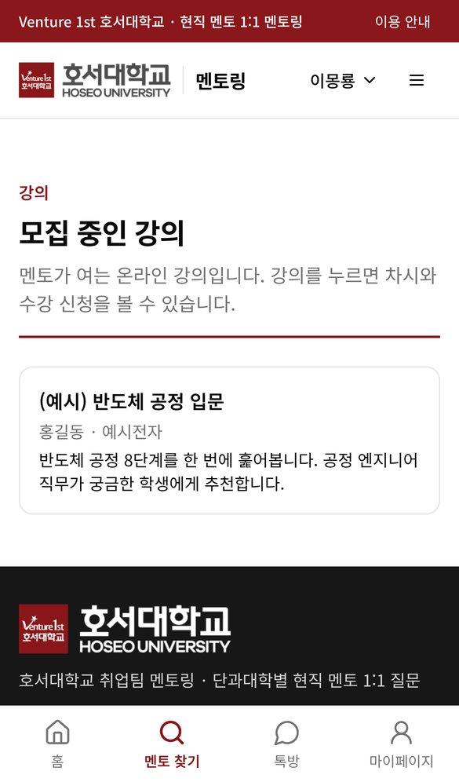
강의 목록
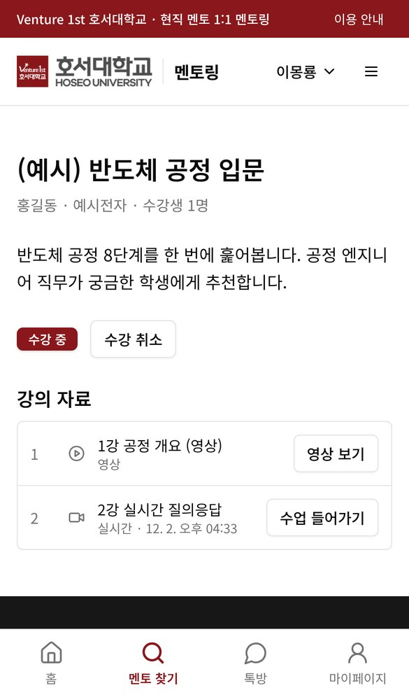
강의 상세 · 강의 자료
- 위쪽 강의 메뉴에서 모집 중인 강의를 봅니다.
- 강의를 눌러 소개를 읽고 수강 신청을 누릅니다.
- 신청하면 강의 자료가 열립니다.
- 영상 보기: 유튜브 등 영상
- 수업 들어가기: 정해진 시각의 실시간 수업
- 내려받기: PDF·한글·PPT 등 자료
- 그만 들으려면 수강 취소.
수강 중인 강의는 마이페이지 → 수강 중인 강의에서도 모아 봅니다.
7. 마이페이지
오른쪽 위 내 이름(휴대폰은 아래 마이페이지)을 누릅니다.
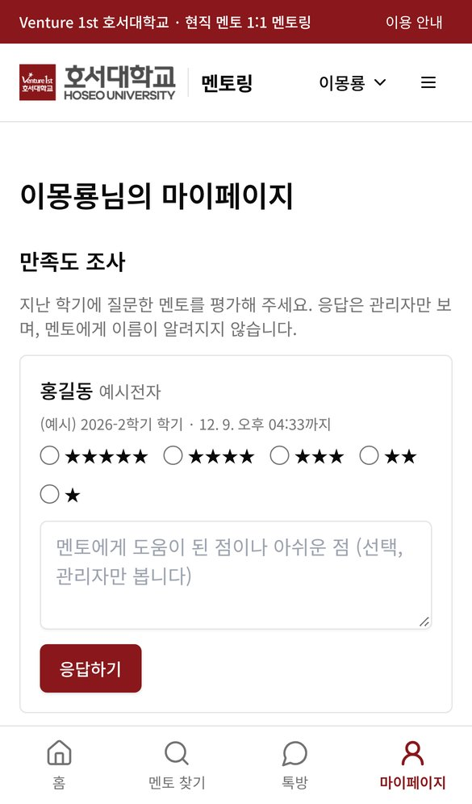
만족도 조사
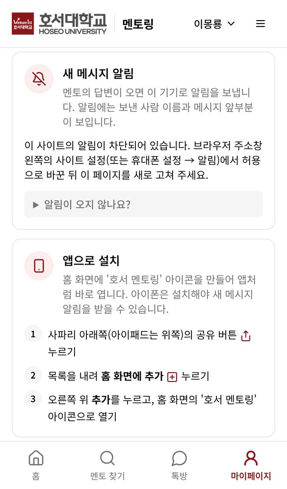
새 메시지 알림 · 앱으로 설치
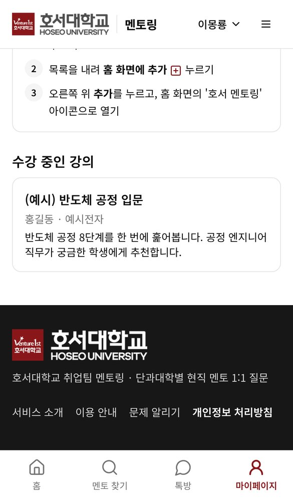
수강 중인 강의
내 캐릭터
톡방에서 멘토에게 보이는 내 프로필은 평상복 입은 동물 캐릭터(곰·고양이·토끼·시바견·판다·펭귄)입니다. 처음에는 하나가 자동으로 정해져 있고, 마이페이지 맨 위 내 캐릭터에서 원하는 캐릭터를 누르면 바로 바뀝니다.
새 메시지 알림 켜기
- 새 메시지 알림에서 알림 받기를 누르고, 브라우저가 묻는 알림 허용에 허용을 누릅니다.
- 이제 멘토가 답하면 휴대폰·PC에 알림이 옵니다. 알림을 받을 기기마다 한 번씩 켭니다.
"알림이 차단되어 있습니다"가 보이면예전에 알림을 거부한 경우입니다. 주소창 왼쪽의 사이트 설정(또는 휴대폰 설정 → 알림)에서 허용으로 바꾼 뒤 페이지를 새로 고칩니다. 그래도 안 되면 ▸ 알림이 오지 않나요?를 펼쳐 안내를 따릅니다.
앱으로 설치 (홈 화면 아이콘)
| 기기 | 방법 |
|---|
| 안드로이드 (크롬) | 마이페이지의 앱 설치 버튼, 또는 크롬 메뉴(⋮) → 홈 화면에 추가 / 앱 설치 |
| 아이폰 (사파리) | 사파리 아래 공유 버튼 → 홈 화면에 추가. 아이폰은 이렇게 설치한 아이콘으로 열어야 알림을 켤 수 있습니다. |
| PC (크롬·엣지) | 주소창 오른쪽의 설치 아이콘 |
카카오톡에서 링크를 열었다면카카오톡 안의 브라우저에서는 설치·알림이 안 됩니다. 오른쪽 아래(또는 위) 메뉴에서 다른 브라우저로 열기(크롬·사파리)를 누르세요.
만족도 조사 (학기가 끝난 뒤)
학기가 끝나면 그 학기에 질문하고 답변을 받은 멘토마다 만족도 조사가 열립니다. 홈 안내와 마이페이지에 나타나며, 별점(1~5)과 짧은 의견을 남기고 응답하기를 누릅니다. 응답은 관리자만 보고, 멘토에게 이름이 알려지지 않습니다. 마감일이 지나면 응답할 수 없습니다.
8. PIN 바꾸기 · 문제 알리기
 PIN 변경
PIN 변경
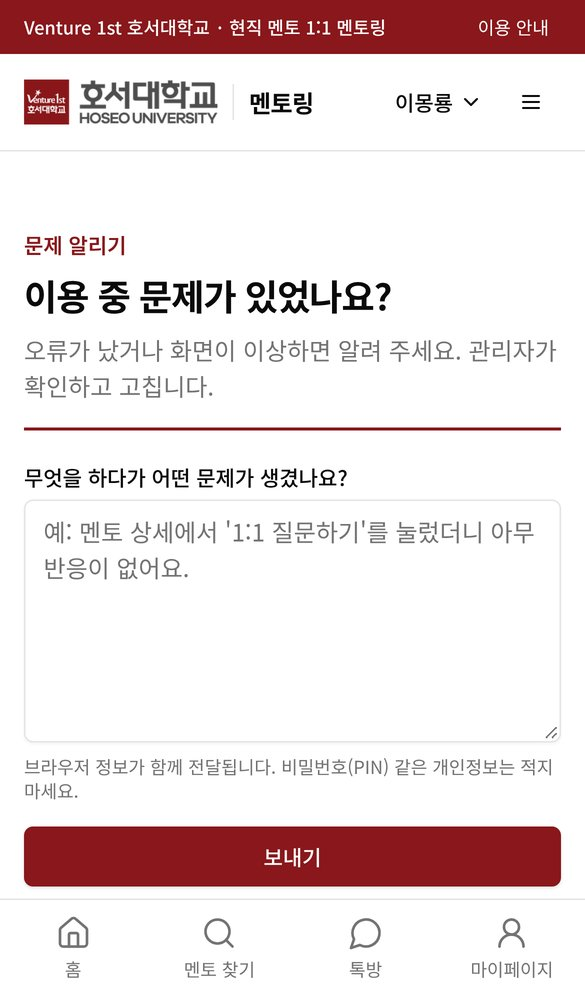
문제 알리기
PIN 바꾸기
오른쪽 위 내 이름 → PIN 변경. 현재 PIN과 새 PIN(두 번)을 넣고 PIN 바꾸기.
문제 알리기
화면이 이상하거나 오류가 나면 화면 맨 아래 문제 알리기를 누릅니다. 무슨 일이 있었는지(어느 화면에서 무엇을 눌렀는지) 적어 보내면 관리자가 확인하고 고칩니다.
탈퇴
화면에서 직접 탈퇴하는 기능은 없습니다. 운영 담당자에게 요청하면 처리하며, 질문·답변 기록도 함께 지워집니다.
9. 자주 묻는 질문
- PIN을 잊어버렸어요.
- 운영 담당자에게 연락해 임시 PIN을 받으세요. 임시 PIN으로 로그인하면 새 PIN을 정하는 화면이 먼저 나옵니다.
- 로그인이 안 돼요.
- 소속이 내 단과대학과 학과인지, 이름에 구분 문자(예: 홍길동A)를 붙였는지, PIN이 맞는지 확인하세요. 자동 입력 방지 칸이 "성공"이 된 뒤에 버튼을 눌러야 합니다.
- 학과나 이름을 잘못 넣고 가입했어요.
- 운영 담당자에게 요청하면 고쳐 줍니다. 바뀐 학과·이름으로 로그인하게 됩니다.
- 다른 단과대학의 멘토에게도 질문할 수 있나요?
- 네. 멘토 찾기에서 모든 구역의 멘토를 보고 질문할 수 있습니다.
- 멘토 이름이 "홍O동"처럼 보여요.
- 로그인하지 않으면 멘토 이름 가운데를 가립니다. 로그인하면 실명이 보입니다.
- 답변 알림이 오지 않아요.
- 마이페이지에서 알림을 켰는지, 휴대폰 설정에서 브라우저(또는 설치한 앱) 알림이 허용되어 있는지 확인하세요. 아이폰은 홈 화면에 추가한 아이콘으로 열어야 합니다.
- "지금은 질문을 받는 학기가 아닙니다"가 나와요.
- 학기 사이 기간입니다. 새 학기가 시작되면 다시 질문할 수 있습니다. 지난 대화는 톡방 메뉴에서 계속 읽을 수 있습니다.
- 내 질문을 다른 학생도 볼 수 있나요?
- 아니요. 1:1 톡방은 나와 멘토만 봅니다. 운영을 위해 관리자가 볼 수 있습니다.
문의운영: 호서대학교 취업팀 · 사이트의 이용 안내 화면 아래 문의처를 참고하세요. 개인정보 처리 내용은 사이트 맨 아래 개인정보 처리방침에 있습니다.